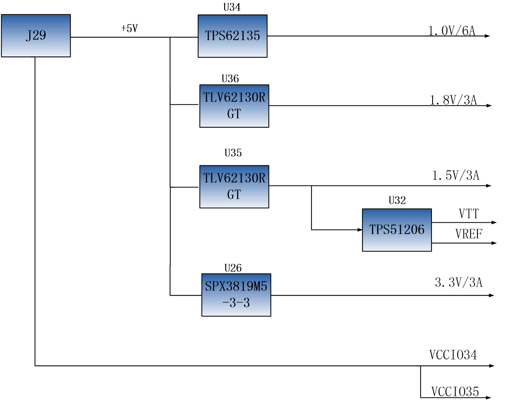

芯驿电子科技（上海）有限公司 基于XILINX ZYNQ7000开发平台的开发板（型号： AX7Z020）2019款正式发布了，为了让您对此开发平台可以快速了解，我们编写了此用户手册。
这款ZYNQ7000 FPGA开发平台采用核心板加扩展板的模式，方便用户对核心板的二次开发利用。核心板使用XILINX的Zynq7000 SOC 芯片的解决方案，它采用ARM+FPGA SOC技术将双核ARM Cortex-A9 和FPGA 可编程逻辑集成在一颗芯片上。另外核心板上含有2片共1GB高速DDR3 SDRAM芯片和1片256Mb的QSPI FLASH芯片。
在底板设计上我们为用户扩展了丰富的外围接口，比如2路CAN通信接口，2路485通信接口，2路XADC输入接口， 1路千兆以太网接口，1路USB2.0 HOST接口，1路HDMI输出接口，Uart通信接口，SD卡座，40针扩展接口等等。满足用户各种以太网高速数据交换，数据存储，视频传输处理以及工业控制的要求，是一款”专业级“的ZYNQ开发平台。为高速以太网数据传输和交换，数据处理的前期验证和后期应用提供了可能。相信这样的一款产品非常适合从事ZYNQ开发的学生、工程师等群体。

开发板简介#
在这里，对这款AX7Z020 ZYNQ开发平台进行简单的功能介绍。
开发板的整个结构，继承了我们一贯的核心板+扩展板的模式来设计的。核心板和扩展板之间使用高速板间连接器连接。
核心板主要由XC7Z020 + 2个DDR3 + QSPI FLASH的最小系统构成，承担ZYNQ系统的高速数据处理和存储的功能， ZYNQ7020和两片DDR3之间的数据位宽为32位，两片DDR3容量高达1GB。ZYNQ7020 采用Xilinx公司的Zynq7000系列的芯片，型号为XC7Z020-2CLG400I。ZYNQ7020芯片可分成处理器系统部分Processor System（PS）和可编程逻辑部分Programmable Logic（PL）。
底板为核心板扩展了丰富的外围接口，其中包含1路千兆以太网接口、1路USB2.0 HOST接口、1路HDMI输出接口、1路SD Card接口、1路UART USB接口、1路SD卡接口、1路MIPI接口、2路CAN总线接口、2路RS485总线接口、2路AD输入接口、2路40针的扩展口和一些按键LED。
下图为整个开发系统的结构示意图：

通过这个示意图，我们可以看到，我们这个开发平台所能含有的接口和功能。
ZYNQ7000核心板
由XC7Z020+1GB DDR3 + 256Mb QSPI FLASH组成，另外有33.333333MHz晶振提供时钟提供给PS系统。
CAN通信接口
2路CAN总线接口，选用TI公司的SN65HVD232芯片。
485通信接口
2路485通信接口，选用MAXIM公司的MAX3485芯片。
千兆以太网接口
1路10/100M/1000M以太网RJ45接口，用于和电脑或其它网络设备进行以太网数据交换。网络接口芯片采用Micrel公司的KSZ9031工业级GPHY芯片。
一路高速USB2.0 HOST接口, 可用于开发板连接鼠标、键盘和U盘等USB外设;
USB Uart接口
1路Uart转USB接口，用于和电脑通信，方便用户调试。串口芯片采用Silicon Labs CP2102GM的USB-UAR芯片, USB接口采用MINI USB接口。
Micro SD卡座
1路Micro SD卡座，用于存储操作系统镜像和文件系统。
AD模拟输入接口
2路AD模拟输入接口，可用于模拟信号的输入和电压转换，SMA接口形式。模拟信号电压输入范围为0~10V（不要输入超过这个范围的电压）。
一路HDMI 图像视频输出接口, 能实现1080P的视频图像传输；
一片IIC接口的EEPROM 24LC04;
板载一片温度传感器芯片LM75，用于检测板子周围环境的温度。
一路MIPI摄像头接口，可以连接黑金MIPI接口的OV5640摄像头。
1个JTAG调试接口。
40针扩展口
2个40针2.54mm间距的扩展口，可以外接黑金的各种模块（双目摄像头，TFT LCD屏，高速AD模块等等）。扩展口包含5V电源1路，3.3V电源2路，地3路，IO口34路。
LED灯
7个发光二极管LED, 核心板上6个，底板上1个。核心板上1个电源指示灯；底板上有1个电源指示灯，1个DONE配置指示灯；4个用户指示灯。
4个用户按键在底板上。
AC7Z020核心板#
简介#
AC7Z020(核心板型号，下同)核心板，ZYNQ芯片是基于XILINX公司的ZYNQ7000系列的XC7Z020-2CLG400I。ZYNQ芯片的PS系统集成了两个ARM Cortex™-A9处理器，AMBA®互连，内部存储器，外部存储器接口和外设。ZYNQ芯片的FPGA内部含有丰富的可编程逻辑单元，DSP和内部RAM。
这款核心板使用了2片Micron公司的MT41K256M16TW-107这款DDR3芯片，每片DDR的容量为512MB；2片DDR芯片组合成32bit的数据总线宽度，ZYNQ和DDR3之间的读写数据时钟频率高达533Mhz；这样的配置，可以满足系统的高带宽的数据处理的需求。
为了和底板连接，这款核心板的2个板对板连接器扩展出了PS端的USB接口，千兆以太网接口，SD卡接口及其它剩余的MIO口。以及PL端的BANK13, BAN34和BANK35的几乎所有IO口（122个），其中BANK34和BANK35的IO的电平可以通过更换核心板上的LDO芯片来修改，满足用户不同电平接口的要求。对于需要大量IO的用户，此核心板将是不错的选择。而且IO连接部分，ZYNQ芯片到接口之间走线做了等长和差分处理，并且核心板尺寸仅为35*42（mm），对于二次开发来说非常适合。
{kind=link}
AC7Z020核心板正面图

AC7Z020核心板背面图
ZYNQ芯片#
开发板使用的是Xilinx公司的Zynq7000系列的芯片，型号为XC7Z020-2CLG400I。芯片的PS系统集成了两个ARM Cortex™-A9处理器，AMBA®互连，内部存储器，外部存储器接口和外设。这些外设主要包括USB总线接口，以太网接口，SD/SDIO接口，I2C总线接口，CAN总线接口，UART接口，GPIO等。PS可以独立运行并在上电或复位下启动。ZYNQ7000芯片的总体框图如图2-2-1所示

图2-2-1 ZYNQ7000芯片的总体框图
其中PS系统部分的主要参数如下：
基于ARM 双核CortexA9 的应用处理器，ARM-v7架构 高达1GHz
每个CPU 32KB 1级指令和数据缓存，512KB 2级缓存 2个CPU共享
片上boot ROM和256KB 片内RAM
外部存储接口，支持16/32 bit DDR2、DDR3接口
两个千兆网卡支持：发散-聚集DMA ，GMII，RGMII，SGMII接口
两个USB2.0 OTG接口，每个最多支持12节点
两个CAN2.0B总线接口
两个SD卡、SDIO、MMC兼容控制器
2个SPI，2个UARTs，2个I2C接口
4组32bit GPIO，54（32+22）作为PS系统IO，64连接到PL
PS内和PS到PL的高带宽连接
其中PL逻辑部分的主要参数如下：
逻辑单元Logic Cells：85K；
查找表LUTs: 53,200
触发器(flip-flops):106,400
乘法器18x25MACCs：220;
Block RAM：4.9Mb；
两个AD转换器,可以测量片上电压、温度感应和高达17外部差分输入通道，1MBPS
XC7Z020-2CLG400I芯片的速度等级为-2，工业级，封装为BGA400，引脚间距为0.8mm，ZYNQ7000系列的具体的芯片型号定义如下图2-2-2所示。

图2-2-2 ZYNQ型号命名规则定义
图2-2-3为开发板所用的XC7Z020芯片实物图。

图2-2-3 XC7Z020芯片实物
DDR3 DRAM#
AC7Z020核心板上配有两片Micron公司的DDR3 SDRAM芯片(共计1GB),型号为MT41K256M16TW-107(兼容海力士的H5TQ4G63AFR-PBI）。DDR3 SDRAM的总线宽度共为32bit。DDR3 SDRAM的最高运行速度可达533MHz(数据速率1066Mbps)。该DDR3存储系统直接连接到了ZYNQ处理系统（PS）的BANK 502的存储器接口上。DDR3 SDRAM的具体配置如下表2-3-1所示。
表5-1 DDR3 SDRAM配置
位号 |
芯片型号 |
容量 |
厂家 |
U8,U9 |
MT41K256M16TW-107 |
256M x 16bit |
Micron |
DDR3的硬件设计需要严格考虑信号完整性，我们在电路设计和PCB设计的时候已经充分考虑了匹配电阻/终端电阻,走线阻抗控制，走线等长控制， 保证DDR3的高速稳定的工作。
DDR3 DRAM的硬件连接方式如图2-3-1所示:

图2-3-1 DDR3 DRAM原理图部分
图2-3-2为DDR3 DRAM实物图

图2-3-2 DDR3 DRAM实物图
DDR3 DRAM引脚分配：
信号名称 |
ZYNQ引脚名 |
ZYNQ引脚号 |
DDR3_DQS0_P |
PS_DDR_DQS_P0_502 |
C2 |
DDR3_DQS0_N |
PS_DDR_DQS_N0_502 |
B2 |
DDR3_DQS1_P |
PS_DDR_DQS_P1_502 |
G2 |
DDR3_DQS1_N |
PS_DDR_DQS_N1_502 |
F2 |
DDR3_DQS2_P |
PS_DDR_DQS_P2_502 |
R2 |
DDR3_DQS2_N |
PS_DDR_DQS_N2_502 |
T2 |
DDR3_DQS3_P |
PS_DDR_DQS_P3_502 |
W5 |
DDR3_DQS4_N |
PS_DDR_DQS_N3_502 |
W4 |
DDR3_D0 |
PS_DDR_DQ0_502 |
C3 |
DDR3_D1 |
PS_DDR_DQ1_502 |
B3 |
DDR3_D2 |
PS_DDR_DQ2_502 |
A2 |
DDR3_D3 |
PS_DDR_DQ3_502 |
A4 |
DDR3_D4 |
PS_DDR_DQ4_502 |
D3 |
DDR3_D5 |
PS_DDR_DQ5_502 |
D1 |
DDR3_D6 |
PS_DDR_DQ6_502 |
C1 |
DDR3_D7 |
PS_DDR_DQ7_502 |
E1 |
DDR3_D8 |
PS_DDR_DQ8_502 |
E2 |
DDR3_D9 |
PS_DDR_DQ9_502 |
E3 |
DDR3_D10 |
PS_DDR_DQ10_502 |
G3 |
DDR3_D11 |
PS_DDR_DQ11_502 |
H3 |
DDR3_D12 |
PS_DDR_DQ12_502 |
J3 |
DDR3_D13 |
PS_DDR_DQ13_502 |
H2 |
DDR3_D14 |
PS_DDR_DQ14_502 |
H1 |
DDR3_D15 |
PS_DDR_DQ15_502 |
J1 |
DDR3_D16 |
PS_DDR_DQ16_502 |
P1 |
DDR3_D17 |
PS_DDR_DQ17_502 |
P3 |
DDR3_D18 |
PS_DDR_DQ18_502 |
R3 |
DDR3_D19 |
PS_DDR_DQ19_502 |
R1 |
DDR3_D20 |
PS_DDR_DQ20_502 |
T4 |
DDR3_D21 |
PS_DDR_DQ21_502 |
U4 |
DDR3_D22 |
PS_DDR_DQ22_502 |
U2 |
DDR3_D23 |
PS_DDR_DQ23_502 |
U3 |
DDR3_D24 |
PS_DDR_DQ24_502 |
V1 |
DDR3_D25 |
PS_DDR_DQ25_502 |
Y3 |
DDR3_D26 |
PS_DDR_DQ26_502 |
W1 |
DDR3_D27 |
PS_DDR_DQ27_502 |
Y4 |
DDR3_D28 |
PS_DDR_DQ28_502 |
Y2 |
DDR3_D29 |
PS_DDR_DQ29_502 |
W3 |
DDR3_D30 |
PS_DDR_DQ30_502 |
V2 |
DDR3_D31 |
PS_DDR_DQ31_502 |
V3 |
DDR3_DM0 |
PS_DDR_DM0_502 |
A1 |
DDR3_DM1 |
PS_DDR_DM1_502 |
F1 |
DDR3_DM2 |
PS_DDR_DM2_502 |
T1 |
DDR3_DM3 |
PS_DDR_DM3_502 |
Y1 |
DDR3_A0 |
PS_DDR_A0_502 |
N2 |
DDR3_A1 |
PS_DDR_A1_502 |
K2 |
DDR3_A2 |
PS_DDR_A2_502 |
M3 |
DDR3_A3 |
PS_DDR_A3_502 |
K3 |
DDR3_A4 |
PS_DDR_A4_502 |
M4 |
DDR3_A5 |
PS_DDR_A5_502 |
L1 |
DDR3_A6 |
PS_DDR_A6_502 |
L4 |
DDR3_A7 |
PS_DDR_A7_502 |
K4 |
DDR3_A8 |
PS_DDR_A8_502 |
K1 |
DDR3_A9 |
PS_DDR_A9_502 |
J4 |
DDR3_A10 |
PS_DDR_A10_502 |
F5 |
DDR3_A11 |
PS_DDR_A11_502 |
G4 |
DDR3_A12 |
PS_DDR_A12_502 |
E4 |
DDR3_A13 |
PS_DDR_A13_502 |
D4 |
DDR3_A14 |
PS_DDR_A14_502 |
F4 |
DDR3_BA0 |
PS_DDR_BA0_502 |
L5 |
DDR3_BA1 |
PS_DDR_BA1_502 |
R4 |
DDR3_BA2 |
PS_DDR_BA2_502 |
J5 |
DDR3_S0 |
PS_DDR_CS_B_502 |
N1 |
DDR3_RAS |
PS_DDR_RAS_B_502 |
P4 |
DDR3_CAS |
PS_DDR_CAS_B_502 |
P5 |
DDR3_WE |
PS_DDR_WE_B_502 |
M5 |
DDR3_ODT |
PS_DDR_ODT_502 |
N5 |
DDR3_RESET |
PS_DDR_DRST_B_502 |
B4 |
DDR3_CLK0_P |
PS_DDR_CKP_502 |
L2 |
DDR3_CLK0_N |
PS_DDR_CKN_502 |
M2 |
DDR3_CKE |
PS_DDR_CKE_502 |
N3 |
QSPI Flash#
核心板配有一片256MBit大小的Quad-SPI FLASH芯片，型号为W25Q256FVEI，它使用3.3V CMOS电压标准。由于QSPI FLASH的非易失特性，在使用中， 它可以作为系统的启动设备来存储系统的启动镜像。这些镜像主要包括FPGA的bit文件、ARM的应用程序代码以及其它的用户数据文件。QSPI FLASH的具体型号和相关参数见表2-4-1。
位号 |
芯片类型 |
容量 |
厂家 |
U15 |
W25Q256FVEI |
32M Byte |
Winbond |
表2-4-1 QSPI Flash的型号和参数
QSPI FLASH连接到ZYNQ芯片的PS部分BANK500的GPIO口上，在系统设计中需要配置这些PS端的GPIO口功能为QSPI FLASH接口。为图2-4-1为QSPI Flash在原理图中的部分。

图2-4-1 QSPI Flash连接示意图
图2-4-2为QSPI Flash的实物图
{kind=link}
2-4-2为QSPI Flash的实物图
配置芯片引脚分配：
信号名称 |
ZYNQ引脚名 |
ZYNQ引脚号 |
QSPI_SCK |
PS_MIO6_500 |
A5 |
QSPI_CS |
PS_MIO1_500 |
A7 |
QSPI_D0 |
PS_MIO2_500 |
B8 |
QSPI_D1 |
PS_MIO3_500 |
D6 |
QSPI_D2 |
PS_MIO4_500 |
B7 |
QSPI_D3 |
PS_MIO5_500 |
A6 |
时钟配置#
AC7Z020核心板上为PS系统提供了有源时钟，使PS系统可以单独工作。PL的时钟由底板提供。
PS系统时钟源
ZYNQ芯片通过核心板上的X1晶振为PS部分提供33.333333MHz的时钟输入。时钟的输入连接到ZYNQ芯片的BANK500的PS_CLK_500的管脚上。其原理图如图2-5-1所示：
{kind=link}
图2-5-1 PS部分的有源晶振
图2-5-2为PS端有源晶振实物图
{kind=link}
图2-5-2 33.333333Mhz有源晶振实物图
时钟引脚分配：
信号名称 |
ZYNQ引脚 |
PS_CLK_500 |
E7 |
PL时钟源
PL的时钟需要通过底板提供，在AX7Z010底板上有一个50Mhz的时钟，为PL部分提供时钟参考。时钟的输入连接到ZYNQ芯片的BANK34的U18的管脚上。其原理图如图2-5-3所示：

图2-5-3 底板PL部分的晶振
时钟引脚分配：
信号名称 |
ZYNQ引脚 |
PL_GCLK1 |
U18 |
电源#
AC7Z020核心板供电电压为DC5V，通过连接底板供电，另外BANK34和BANK35的电源也是通过底板提供。板上的电源设计示意图如下图2-6-1所示:
图2-6-1原理图中电源接口部分
开发板通过+5V供电, 通过四路DC/DC电源芯片转化成+1.0V，+1.8V，+1.5V，+3.3V四路电源，+1.0V输出电流可高达6A， +1.8V和+1.5V电源为3A，+3.3V为500mA 。J29上还各分出4个引脚给FPGA的BANK34，BANK35供电，默认为3.3V，用户可以通过更改底板上的VCCIO34和VCCIO35来改变BANK34和BANK35的电源。1.5V通过TI的TPS51206生成DDR3需要的VTT和VREF电压。各个电源分配的功能如下表所示：
电源 |
功能 |
+1.0V |
ZYNQ PS和PL部分的内核电压 |
+1.8V |
ZYNQ PS和PL部分辅助电压，BANK501 IO电压 |
+3.3V |
ZYNQ Bank0,Bank500，Bank13的VCCIO, QSIP FLASH, Clock晶振 |
+1.5V |
DDR3, ZYNQ Bank501 |
VREF, VTT（+0.75V） |
DDR3 |
VCCIO34/35 |
Bank34, Bank35 |
因为ZYNQ FPGA的电源有上电顺序的要求，在电路设计中，我们已经按照 芯片的电源要求设计，上电依次为+1.0V->+1.8V->（+1.5 V、+3.3V、VCCIO）的电路设计，保证芯片的正常工作。因为BANK34，BANK35的电平标准由底板提供的电源决定，最高为3.3V，用户自己设计底板为核心板提供VCCIO34和VCCIO35的电源时，上电的顺序要比+5V慢一些。
结构图#

正面图（Top View）
连接器管脚定义#
核心板一共扩展出2个高速扩展口，使用2个120Pin的板间连接器（J29/J30）和底板连接，连接器的PIN脚间距为0.5mm。其中J29连接5V电源，VCCIO电源输入，一部分IO信号和JTAG信号，J30连接剩余的IO信号和MIO。 BANK34和BANK35的IO电平可以通过调整连接器上VCCIO输入来改变电平标准，最高不超过3.3V。我们设计的底板AX7Z020默认为3.3V。
J29连接器的引脚分配
J 29管脚 |
信 号名称 |
ZYNQ 引脚号 |
J 29管脚 |
信号 名称 |
ZYNQ 引脚号 |
1 |
VCC5V |
2 |
VCC5V |
||
3 |
VCC5V |
4 |
VCC5V |
||
5 |
VCC5V |
6 |
VCC5V |
||
7 |
VCC5V |
8 |
VCC5V |
||
9 |
GND |
10 |
GND |
||
11 |
VCCIO_34 |
12 |
VCCIO_35 |
||
13 |
VCCIO_34 |
14 |
VCCIO_35 |
||
15 |
VCCIO_34 |
16 |
VCCIO_35 |
||
17 |
VCCIO_34 |
18 |
VCCIO_35 |
||
19 |
GND |
20 |
GND |
||
21 |
I O34_L10P |
V15 |
22 |
IO34_L7P |
Y16 |
23 |
I O34_L10N |
W15 |
24 |
IO34_L7N |
Y17 |
25 |
I O34_L15N |
U20 |
26 |
IO34_L17P |
Y18 |
27 |
I O34_L15P |
T20 |
28 |
IO34_L17N |
Y19 |
29 |
GND |
30 |
GND |
||
31 |
IO34_L9N |
U17 |
32 |
IO34_L8P |
W14 |
33 |
IO34_L9P |
T16 |
34 |
IO34_L8N |
Y14 |
35 |
I O34_L12N |
U19 |
36 |
IO34_L3P |
U13 |
37 |
I O34_L12P |
U18 |
38 |
IO34_L3N |
V13 |
39 |
GND |
40 |
GND |
||
41 |
I O34_L14N |
P20 |
42 |
IO34_L21N |
V18 |
43 |
I O34_L14P |
N20 |
44 |
IO34_L21P |
V17 |
45 |
I O34_L16N |
W20 |
46 |
IO34_L18P |
V16 |
47 |
I O34_L16P |
V20 |
48 |
IO34_L18N |
W16 |
49 |
GND |
50 |
GND |
||
51 |
I O34_L22N |
W19 |
52 |
IO34_L23P |
N17 |
53 |
I O34_L22P |
W18 |
54 |
IO34_L23N |
P18 |
55 |
I O34_L20N |
R18 |
56 |
IO34_L13N |
P19 |
57 |
I O34_L20P |
T17 |
58 |
IO34_L13P |
N18 |
59 |
GND |
60 |
GND |
||
61 |
I O34_L19N |
R17 |
62 |
IO34_L11N |
U15 |
63 |
I O34_L19P |
R16 |
64 |
IO34_L11P |
U14 |
65 |
I O34_L24P |
P15 |
66 |
IO34_L5N |
T15 |
67 |
I O34_L24N |
P16 |
68 |
IO34_L5P |
T14 |
69 |
GND |
70 |
GND |
||
71 |
IO34_L4P |
V12 |
72 |
IO34_L2N |
U12 |
73 |
IO34_L4N |
W13 |
74 |
IO34_L2P |
T12 |
75 |
IO34_L1P |
T11 |
76 |
IO34_L6N |
R14 |
77 |
IO34_L1N |
T10 |
78 |
IO34_L6P |
P14 |
79 |
GND |
80 |
GND |
||
81 |
I O13_L13P |
Y7 |
82 |
IO13_L21P |
V11 |
83 |
I O13_L13N |
Y6 |
84 |
IO13_L21N |
V10 |
85 |
I O13_L11N |
V7 |
86 |
IO13_L14N |
Y8 |
87 |
I O13_L11P |
U7 |
88 |
IO13_L14P |
Y9 |
89 |
GND |
90 |
GND |
||
91 |
I O13_L19N |
U5 |
92 |
IO13_L22N |
W6 |
93 |
I O13_L19P |
T5 |
94 |
IO13_L22P |
V6 |
95 |
I O13_L16P |
W10 |
96 |
IO13_L15P |
V8 |
97 |
I O13_L16N |
W9 |
98 |
IO13_L15N |
W8 |
99 |
GND |
100 |
GND |
||
101 |
I O13_L17P |
U9 |
102 |
IO13_L20P |
Y12 |
103 |
I O13_L17N |
U8 |
104 |
IO13_L20N |
Y13 |
105 |
I O13_L18P |
W11 |
106 |
IO13_L12N |
U10 |
107 |
I O13_L18N |
Y11 |
108 |
IO13_L12P |
T9 |
109 |
GND |
110 |
GND |
||
111 |
FPGA_TCK |
F9 |
112 |
VP |
K9 |
113 |
FPGA_TMS |
J6 |
114 |
VN |
L10 |
115 |
FPGA_TDO |
F6 |
116 |
PS_POR_B |
C7 |
117 |
FPGA_TDI |
G6 |
118 |
FPGA_DONE |
R11 |
119 |
NC |
120 |
NC |
J30连接器的引脚分配
J30 管脚 |
信号名称 |
ZY NQ引 脚号 |
J30 管脚 |
信号名称 |
ZYN Q引 脚号 |
1 |
IO35_L1P |
C20 |
2 |
IO35_L15N |
F20 |
3 |
IO35_L1N |
B20 |
4 |
IO35_L15P |
F19 |
5 |
IO35_L18N |
G20 |
6 |
IO35_L5P |
E18 |
7 |
IO35_L18P |
G19 |
8 |
IO35_L5N |
E19 |
9 |
GND |
T13 |
10 |
GND |
T13 |
11 |
IO35_L10N |
J19 |
12 |
IO35_L3N |
D18 |
13 |
IO35_L10P |
K19 |
14 |
IO35_L3P |
E17 |
15 |
IO35_L2N |
A20 |
16 |
IO35_L4P |
D19 |
17 |
IO35_L2P |
B19 |
18 |
IO35_L4N |
D20 |
19 |
GND |
T13 |
20 |
GND |
T13 |
21 |
IO35_L8P |
M17 |
22 |
IO35_L9N |
L20 |
23 |
IO35_L8N |
M18 |
24 |
IO35_L9P |
L19 |
25 |
IO35_L7P |
M19 |
26 |
IO35_L6P |
F16 |
27 |
IO35_L7N |
M20 |
28 |
IO35_L6N |
F17 |
29 |
GND |
T13 |
30 |
GND |
T13 |
31 |
IO35_L17N |
H20 |
32 |
IO35_L16N |
G18 |
33 |
IO35_L17P |
J20 |
34 |
IO35_L16P |
G17 |
35 |
IO35_L19N |
G15 |
36 |
IO35_L13N |
H17 |
37 |
IO35_L19P |
H15 |
38 |
IO35_L13P |
H16 |
39 |
GND |
T13 |
40 |
GND |
T13 |
41 |
IO35_L12N |
K18 |
42 |
IO35_L14N |
H18 |
43 |
IO35_L12P |
K17 |
44 |
IO35_L14P |
J18 |
45 |
IO35_L24N |
J16 |
46 |
IO35_L20P |
K14 |
47 |
IO35_L24P |
K16 |
48 |
IO35_L20N |
J14 |
49 |
GND |
T13 |
50 |
GND |
T13 |
51 |
IO35_L21N |
N16 |
52 |
IO35_L11P |
L16 |
53 |
IO35_L21P |
N15 |
54 |
IO35_L11N |
L17 |
55 |
IO35_L22N |
L15 |
56 |
IO35_L23P |
M14 |
57 |
IO35_L22P |
L14 |
58 |
IO35_L23N |
M15 |
59 |
GND |
T13 |
60 |
GND |
T13 |
61 |
PS_MIO22 |
B17 |
62 |
PS_MIO50 |
B13 |
63 |
PS_MIO27 |
D13 |
64 |
PS_MIO45 |
B15 |
65 |
PS_MIO23 |
D11 |
66 |
PS_MIO46 |
D16 |
67 |
PS_MIO24 |
A16 |
68 |
PS_MIO41 |
C17 |
69 |
GND |
T13 |
70 |
GND |
T13 |
71 |
PS_MIO25 |
F15 |
72 |
PS_MIO7 |
D8 |
73 |
PS_MIO26 |
A15 |
74 |
PS_MIO12 |
D9 |
75 |
PS_MIO21 |
F14 |
76 |
PS_MIO10 |
E9 |
77 |
PS_MIO16 |
A19 |
78 |
PS_MIO11 |
C6 |
79 |
GND |
T13 |
80 |
GND |
T13 |
81 |
PS_MIO20 |
A17 |
82 |
PS_MIO9 |
B5 |
83 |
PS_MIO19 |
D10 |
84 |
PS_MIO14 |
C5 |
85 |
PS_MIO18 |
B18 |
86 |
PS_MIO8 |
D5 |
87 |
PS_MIO17 |
E14 |
88 |
PS_MIO0 |
E6 |
89 |
GND |
T13 |
90 |
GND |
T13 |
91 |
PS_MIO39 |
C18 |
92 |
PS_MIO13 |
E8 |
93 |
PS_MIO38 |
E13 |
94 |
PS_MIO47 |
B14 |
95 |
PS_MIO37 |
A10 |
96 |
PS_MIO48 |
B12 |
97 |
PS_MIO28 |
C16 |
98 |
PS_MIO49 |
C12 |
99 |
GND |
T13 |
100 |
GND |
T13 |
101 |
PS_MIO35 |
F12 |
102 |
PS_MIO52 |
C10 |
103 |
PS_MIO34 |
A12 |
104 |
PS_MIO51 |
B9 |
105 |
PS_MIO33 |
D15 |
106 |
PS_MIO40 |
D14 |
107 |
PS_MIO32 |
A14 |
108 |
PS_MIO44 |
F13 |
109 |
GND |
T13 |
110 |
GND |
T13 |
111 |
PS_MIO31 |
E16 |
112 |
PS_MIO15 |
C8 |
113 |
PS_MIO36 |
A11 |
114 |
PS_MIO42 |
E12 |
115 |
PS_MIO29 |
C13 |
116 |
PS_MIO43 |
A9 |
117 |
PS_MIO30 |
C15 |
118 |
PS_MIO53 |
C11 |
119 |
QS PI_D3_PS_MIO5 |
A6 |
120 |
QS PI_D2_PS_MIO4 |
B7 |
扩展板#
简介#
通过前面的功能简介，我们可以了解到扩展板部分的功能
2路CAN通信接口
2路485通信接口
1路10/100M/1000M以太网RJ-45接口
1路USB HOST接口
1路USB Uart通信接口
1路SD卡接口
2路40针扩展口
2路AD输入接口
1路HDMI输出接口
1路MIPI摄像头接口
1路RTC实时时钟
1路EEPROM
1路温度传感器
JTAG调试口
4个独立按键
4个用户LED灯
CAN通信接口#
AX7Z020底板上有2路CAN通信接口，连接在PS系统端BANK500的GPIO接口上。CAN收发芯片选用了TI公司的SN65HVD232C芯片为用户CAN通信服务。
图3-2-1为PS端CAN收发芯片的连接示意图
图3-2-1 PS端CAN收发芯片的连接示意图
图3-2-2为PS端CAN收发芯片的实物图

图3-2-2 PS端CAN芯片和接口的实物图
CAN通信引脚分配如下：
信号名称 |
ZYNQ引脚名 |
ZYNQ引脚号 |
备注 |
CAN0_RX |
PS_MIO10 |
E9 |
CAN0接收端 |
CAN0_TX |
PS_MIO11 |
C6 |
CAN0发送端 |
CAN1_RX |
PS_MIO13 |
E8 |
CAN1接收端 |
CAN1_TX |
PS_MIO12 |
D9 |
CAN1发送端 |
485通信接口#
AX7Z020底板上有2路485通信接口，其中485通信端口1连接在PS系统端BANK500的GPIO接口上,485通信端口2连接在PL系统端BANK34的GPIO接口上。
485收发芯片选用MAXIM公司的MAX3485芯片为用户485通信服务。
图3-3-1为PL端485收发芯片的连接示意图

图3-3-1 RS485芯片和接口的连接示意图
图3-3-2为RS485收发芯片的实物图
{kind=link}
图3-3-2 RS485芯片和接口的实物图
485通信引脚分配如下：
信号名称 |
ZYNQ引脚名 |
ZYNQ引脚号 |
备注 |
485_TXD1 |
PS_MIO15 |
C8 |
485发送端1 |
485_RXD1 |
PS_MIO14 |
C5 |
485接收端1 |
485_DE1 |
PS_MIO9 |
B5 |
4 85接受发射使能1 |
485_TXD2 |
IO34_L4N |
W13 |
485发送端2 |
485_RXD2 |
IO34_L4P |
V12 |
485接收端2 |
485_DE2 |
IO34_L12N |
U19 |
4 85接受发射使能2 |
千兆以太网接口#
AX7Z020底板上有1路千兆以太网接口，连接在PS系统端BANK501的GPIO接口上。
以太网芯片采用Micrel公司的KSZ9031RNX以太网PHY芯片为用户提供网络通信服务。KSZ9031RNX芯片支持10/100/1000 Mbps网络传输速率，通过RGMII接口跟Zynq7000系统的MAC层进行数据通信。KSZ9031RNX支持ＭDI/MDX自适应，各种速度自适应，Master/Slave自适应，支持MDIO总线进行PHY的寄存器管理。
KSZ9031RNX上电会检测一些特定的IO的电平状态，从而确定自己的工作模式。表3-2-1 描述了GPHY芯片上电之后的默认设定信息。
配置Pin脚 |
说明 |
配置值 |
PHYAD[2:0] |
MDIO/MDC 模式的PHY地址 |
PHY Address 为 011 |
CLK125_EN |
使能125Mhz时钟输出选择 |
使能 |
LED_MODE |
LED灯模式配置 |
单个LED灯模式 |
MODE0~MODE3 |
链路自适应和全双工配置 |
10/100/1000自适 应，兼容全双工、半双工 |
表3-4-1PHY芯片默认配置值
当网络连接到千兆以太网时，ZYNQ和PHY芯片KSZ9031RNX的数据传输时通过RGMII总线通信，传输时钟为125Mhz，数据在时钟的上升沿和下降样采样。
当网络连接到百兆以太网时，ZYNQ和PHY芯片KSZ9031RNX的数据传输时通过RMII总线通信，传输时钟为25Mhz。数据在时钟的上升沿和下降样采样。
图3-2-1为ZYNQ PS端1路以太网PHY芯片连接示意图:
 图3-4-1 ZYNQ
PS系统与GPHY连接示意图
图3-4-1 ZYNQ
PS系统与GPHY连接示意图
图3-4-3为PS端以太网GPHY芯片的实物图
{kind=link}
图3-4-3 PS端以太网GPHY芯片和接口实物图
千兆以太网引脚分配如下：
信号名称 |
ZYNQ引脚名 |
ZYNQ引脚号 |
备注 |
ETH_TXCK |
PS_MIO16 |
A19 |
RGMII 发送时钟 |
ETH_TXD0 |
PS_MIO17 |
E14 |
发送数据bit０ |
ETH_TXD1 |
PS_MIO18 |
B18 |
发送数据bit1 |
ETH_TXD2 |
PS_MIO19 |
D10 |
发送数据bit2 |
ETH_TXD3 |
PS_MIO20 |
A17 |
发送数据bit3 |
ETH_TXCTL |
PS_MIO21 |
F14 |
发送使能信号 |
ETH_RXCK |
PS_MIO22 |
B17 |
RGMII接收时钟 |
ETH_RXD0 |
PS_MIO23 |
D11 |
接收数据Bit0 |
ETH_RXD1 |
PS_MIO24 |
A16 |
接收数据Bit1 |
ETH_RXD2 |
PS_MIO25 |
F15 |
接收数据Bit2 |
ETH_RXD3 |
PS_MIO26 |
A15 |
接收数据Bit3 |
ETH_RXCTL |
PS_MIO27 |
D13 |
接 收数据有效信号 |
ETH_MDC |
PS_MIO52 |
C10 |
MDIO管理时钟 |
ETH_MDIO |
PS_MIO53 |
C11 |
MDIO管理数据 |
PS_POR_B |
PS_POR_B |
C7 |
复位信号 |
USB2.0 Host接口#
AX7Z020底板上有1个USB2.0 HOST接口， USB2.0收发器采用的是一个1.8V的，高速的支持ULPI标准接口的USB3320C-EZK芯片,ZYNQ的USB总线接口和USB3320C-EZK收发器相连接，实现高速的USB2.0 Host模式的数据通信。USB3320C的USB的数据和控制信号连接到ZYNQ芯片PS端的BANK501的IO口上。24MHz的晶振为为USB3320C芯片提供系统时钟。
USB接口为扁型USB接口(USB Type A)，方便用户同时连接不同的USB Slave外设(比如USB鼠标和USB键盘）。另外底板为USB接口提供了+5V的电源。
ZYNQ处理器和USB3320C-EZK芯片连接的示意图如3-5-1所示：

图3-5-1 Zynq7000和USB芯片间连接示意图
图3-5-2为USB2.0芯片和接口的实物图。
{kind=link}
图3-5-2 USB2.0部分的实物图
USB2.0引脚分配：
信号名称 |
ZY NQ引脚名 |
ZY NQ引脚号 |
备注 |
OTG_DATA4 |
PS_MIO28 |
C16 |
USB数据Bit4 |
OTG_DIR |
PS_MIO29 |
C13 |
USB数据方向信号 |
OTG_STP |
PS_MIO30 |
C15 |
USB停止信号 |
OTG_NXT |
PS_MIO31 |
E16 |
USB下一数据信号 |
OTG_DATA0 |
PS_MIO32 |
A14 |
USB数据Bit0 |
OTG_DATA1 |
PS_MIO33 |
D15 |
USB数据Bit1 |
OTG_DATA2 |
PS_MIO34 |
A12 |
USB数据Bit2 |
OTG_DATA3 |
PS_MIO35 |
F12 |
USB数据Bit3 |
OTG_CLK |
PS_MIO36 |
A11 |
USB时钟信号 |
OTG_DATA5 |
PS_MIO37 |
A10 |
USB数据Bit5 |
OTG_DATA6 |
PS_MIO38 |
E13 |
USB数据Bit6 |
OTG_DATA7 |
PS_MIO39 |
C18 |
USB数据Bit7 |
OTG_RESETN |
PS_MIO46 |
D16 |
USB复位信号 |
USB转串口#
AX7Z020底板上配有一个USB转Uart接口，用于ZYNQ7000系统的整体调试， 转换芯片采用Silicon Labs CP2102GM的USB-UAR芯片, USB接口采用MINI USB接口，可以用一根USB线将它连接到上PC的USB口进行核心板的单独供电和串口数据通信 。
USB Uart电路设计的示意图如下图3-6-1所示:
3-6-1 USB转串口示意图
下图3-6-2为USB转串口的实物图

3-6-2 USB转串口实物图
UART转串口的ZYNQ引脚分配：
信号名称 |
ZY NQ引脚名 |
ZY NQ引脚号 |
备注 |
UART_RX |
PS_MIO49 |
C12 |
Uart数据输入 |
UART_TX |
PS_MIO48 |
B12 |
Uart数据输出 |
AD输入接口#
AX7Z020底板上配有4路AD输入接口，其中2路用于采集外部模拟信号进行AD转换，另外2路用于测量开发板的电源电压和电流。 用于采集外部模拟信号进行AD转换的2路模拟信号选用SMA接头作为输入，将输入的信号转换为差分信号后输入ZYNQ。电源电流测量连接到ZYNQ的专用AD输入管脚VP和VN。
AD采集电路设计的示意图如下图3-7-1所示:
图3-7-1 AD采集电路设计的示意图
下图3-7-2为AD采集电路接口的实物图

图3-7-2 AD采集电路接口的实物图
AD采集电路的ZYNQ引脚分配：
信号名称 |
ZY NQ引脚名 |
ZY NQ引脚号 |
备注 |
XADC_AD1P |
IO35_L3P |
E17 |
AD_IN_P |
XADC_AD1N |
IO35_L3N |
D18 |
AD_IN_N |
XADC_AD9P |
IO35_L5P |
E18 |
AD_IN_P |
XADC_AD9N |
IO35_L5N |
E19 |
AD_IN_N |
XADC_AD12P |
IO35_L15P |
F19 |
AD_IN_P |
XADC_AD12N |
IO35_L15N |
F20 |
AD_IN_N |
VP |
VP |
K9 |
AD_IN_P |
VN |
VN |
L10 |
AD_IN_N |
HDMI输出接口#
HDMI，全称为高清晰度多媒体视频输出接口。AX7Z020开发板上通过ZYNQ的差分IO直接连接到HDMI接口的差分信号和时钟，在ZYNQ内部实现HMDI信号的差分转并行再进行编解码，实现DMI数字视频输入和输出的传输解决方案，最高支持1080P@60Hz的输入和输出的功能。
HDMI的信号连接到ZYNQ的PL部分的BANK34上,设计原理图如下图3-8-1所示：
{kind=link}
图3-8-1 HDMI接口设计原理图
图3-8-2为HDMI接口的实物图，
{kind=link}
图3-8-2 HDMI接口实物图
ZYNQ的引脚分配：
信号名称 |
ZY NQ引脚名 |
ZY NQ引脚号 |
备注 |
HDMI_CLK_P |
IO34_L3P |
U13 |
HDMI时钟信号正 |
HDMI_CLK_N |
IO34_L3N |
V13 |
HDMI时钟信号负 |
HDMI_D0_P |
IO34_L8P |
W14 |
HDMI数据0正 |
HDMI_D0_N |
IO34_L8N |
Y14 |
HDMI数据0负 |
HDMI_D1_P |
IO34_L17P |
Y18 |
HDMI数据1正 |
HDMI_D1_N |
IO34_L17N |
Y19 |
HDMI数据1负 |
HDMI_D2_P |
IO34_L7P |
Y16 |
HDMI数据2正 |
HDMI_D2_N |
IO34_L7N |
Y17 |
HDMI数据2负 |
HDMI_SCL |
IO34_L21N |
V18 |
HDMI IIC时钟 |
HDMI_SDA |
IO34_L21P |
V17 |
HDMI IIC数据 |
MIPI摄像头接口#
AX7Z020底板上包含了一个MIPI摄像头接口，可以用来接我们的MIPI OV5640摄像头模块。MIPI接口部分的电路原理图如下图3-9-1 所示：
{kind=link}
图3-9-1 MIPI接口设计原理图
图3-9-2 为MIPI摄像头接口的实物图：
{kind=link}
图3-9-1 HMIPI接口设计原理图
MIPI接口引脚分配
信号名称 |
ZY NQ引脚名 |
ZY NQ引脚号 |
备注 |
LP_CLK_P |
IO13_L15P |
V8 |
Low Power模式的时钟正 |
LP_CLK_N |
IO13_L15N |
W8 |
Low Power模式的时钟负 |
LP_LANE0_P |
IO13_L12P |
T9 |
Low Power模式的LANE0正 |
LP_LANE0_N |
IO13_L12N |
U10 |
Low Power模式的LANE0负 |
LP_LANE1_P |
IO13_L20P |
Y12 |
Low Power模式的LANE1正 |
LP_LANE1_N |
IO13_L20N |
Y13 |
Low Power模式的LANE1负 |
MIPI_CLK_P |
IO13_L13P |
Y7 |
High Speed模式的时钟正 |
MIPI_CLK_N |
IO13_L13N |
Y6 |
High Speed模式的时钟负 |
MIPI_LAN0_P |
IO13_L18P |
W11 |
High Speed模式的LANE0正 |
MIPI_LAN0_N |
IO13_L18N |
Y11 |
High Speed模式的LANE0负 |
MIPI_LAN1_P |
IO13_L17P |
U9 |
High Speed模式的LANE1正 |
MIPI_LAN1_N |
IO13_L17N |
U8 |
High Speed模式的LANE1负 |
CAM_GPIO |
IO13_L11P |
U7 |
摄像头的GPIO控制 |
CAM_CLK |
IO13_L11N |
V7 |
摄像头的时钟输入 |
CAM_SCL |
IO13_L19P |
T5 |
摄像头的I2C时钟 |
CAM_SDA |
IO13_L19N |
U5 |
摄像头的I2C数据 |
SD卡槽#
AX7Z020底板包含了一个Micro型的SD卡接口，以提供用户访问SD卡存储器，用于存储ZYNQ芯片的BOOT程序，Linux操作系统内核, 文件系统以及其它的用户数据文件。
SDIO信号与ZYNQ的PS BANK501的IO信号相连，因为该BANK的VCCMIO设置为1.8V，但SD卡的数据电平为3.3V, 我们这里通过TXS02612电平转换器来连接。Zynq7000 PS和SD卡连接器的原理图如图3-6-1所示。

图3-10-1 SD卡连接示意图
图3-10-2 为开发板上SD卡槽实物图
{kind=link}
图3-10-2 SD卡槽实物图
SD卡槽引脚分配
信号名称 |
ZY NQ引脚名 |
ZY NQ引脚号 |
备注 |
SD_CLK |
PS_MIO40 |
D14 |
SD时钟信号 |
SD_CMD |
PS_MIO41 |
C17 |
SD命令信号 |
SD_D0 |
PS_MIO42 |
E12 |
SD数据Data0 |
SD_D1 |
PS_MIO43 |
A9 |
SD数据Data1 |
SD_D2 |
PS_MIO44 |
F13 |
SD数据Data2 |
SD_D3 |
PS_MIO45 |
B15 |
SD数据Data3 |
SD_CD |
PS_MIO47 |
B14 |
SD卡插入信号 |
EEPROM#
AX7Z020开发板板载了一片EEPROM。EEPROM的型号为24LC04,容量为：4Kbit（2*256*8bit），由2个256byte的block组成,通过IIC总线进行通信。板载EEPROM就是为了学习IIC总线的通信方式。EEPROM的I2C信号连接的ZYNQ PS端的I2C接口上。图3-11-1为EEPROM的连接示意图

图7-5 EEPROM连接示意图
图3-11-2为EEPROM实物图

图3-11-2 EEPROM实物图
EEPROM引脚分配：
信号名称 |
ZYNQ引脚名 |
ZYN Q引脚号 |
备注 |
I2C_SCL_1V8 |
MIO50 |
B13 |
IIC时钟信号 |
I2C_SDA_1V8 |
MIO51 |
B9 |
IIC数据信号 |
实时时钟#
开发板板载了一片实时时钟RTC芯片，型号DS1338，他的功能是提供到2099年内的日历功能，年月日时分秒还有星期。如果系统中需要时间的话，那么RTC就需要涉及到产品中。他外部需要接一个32.768KHz的无源时钟，提供精确的时钟源给时钟芯片，这样才能让RTC可以准确的提供时钟信息给产品。同时为了产品掉电以后，实时时钟还可以正常运行，一般需要另外配一个电池给时钟芯片供电，图3-12-2中为BT1为电池座，我们将纽扣电池（型号CR1220，电压为3V）放入以后，当系统掉电池，纽扣电池还可以给DS1338供电，这样，不管产品是否供电，DS1302都会正常运行，不会间断，可以提供持续不断的时间信息。RTC的接口信号跟EEPORM是共用I2C总线。图3-12-1为DS1338连接示意图

图3-12-1 DS1338原理图
图3-12-2为DS1338实物图

图3-12-2 DS1302实物图
DS1338接口引脚分配：
信号名称 |
ZYNQ引脚名 |
Z YNQ引脚号 |
备注 |
I2C_SCL_1V8 |
MIO50 |
B13 |
RTC的时钟信号 |
I2C_SDA_1V8 |
MIO51 |
B9 |
RTC的复位信号 |
RTC_SQW |
MIO7 |
D8 |
方波输出信号 |
温度传感器#
AX7Z020开发板上安装了一个高精度、低功耗、数字温度传感器芯片，型号为ON Semiconductor公司的LM75。LM75芯片的温度精度为0.5度,传感器和FPGA直接为I2C数字接口， ZYNQ7020通过I2C接口来读取当前开发板附近的温度。LM75传感器的接口信号跟EEPORM是共用I2C总线，下图3-13-1为LM75传感器连接示意图
图3-13-1 LM75传感器连接示意图
下图为LM75传感器实物图

图3-13-2 LM75传感器实物图
JTAG接口#
在AX7Z020底板上预留了JTAG的下载调试电路，将 ZYNQ的JTAG调试信号TCK,TDO,TMS,TDI引出。图3-14-1为开发板上JTAG口的原理图部分：
{kind=link}
图3-14-1 原理图中JTAG接口部分
在AX7Z020开发板上，JTAG接口的实物图如下图3-14-2，用户可以通过我们的下载器进行ZYNQ的系统调试。

图3-14-2 JTAG接口实物图
用户LED灯#
AX7Z020底板上有4个用户LED灯（LED1~LED4）。4个用户LED灯均连接到PL端BANK35的IO上，用户可以通过程序来控制亮和灭，当连接用户LED灯的IO电压为高时，用户LED灯熄灭，当连接IO电压为低时，用户LED会被点亮。LED灯硬件连接的示意图如图3-15-1所示：
图3-15-1 底板LED灯硬件连接示意图
图3-15-2 为底板上的LED灯实物图

图3-15-2 底板的LED灯实物图
底板用户LED灯的引脚分配
信号名称 |
ZYNQ引脚名 |
ZY NQ管脚号 |
备注 |
LED1 |
IO35_L20N |
J14 |
用户LED1灯 |
LED2 |
IO35_L20P |
K14 |
用户LED2灯 |
LED3 |
IO35_L14P |
J18 |
用户LED3灯 |
LED4 |
IO35_L14N |
H18 |
用户LED4灯 |
用户按键#
AX7Z020底板上有4个用户按键KEY1~KEY4，4个用户KEY均连接到PL端BANK35的IO上。按键按下，信号为低，ZYNQ芯片就是检测到低电平来判断按键是否按下。用户按键连接的示意图如图3-16-1所示：

图3-16-1 用户按键连接示意图
图3-16-2 为用户按键在底板的实物图
{kind=link}
图2-16-2 用户按键实物图
用户按键的ZYNQ管脚分配
信号名称 |
ZY NQ引脚名 |
ZY NQ引脚号 |
备注 |
KEY1 |
IO35_L23N |
M15 |
用户按键KEY1 |
KEY2 |
IO35_L23P |
M14 |
用户按键KEY2 |
KEY3 |
IO35_L11N |
L17 |
用户按键KEY3 |
KEY4 |
IO35_L11P |
L16 |
用户按键KEY4 |
扩展口#
AX7Z020底板预留了2个2.54mm标准间距的40针的扩展口J20和J21，用于连接黑金的各个模块或者用户自己设计的外面电路，扩展口有40个信号，其中，5V电源1路，3.3V电源2路，地3路，IO口34路。切勿IO直接跟5V设备直接连接，以免烧坏ZYNQ7000芯片。如果要接5V设备，需要接电平转换芯片。
扩展口(J20)的电路如下图3-17-1所示
{kind=link}
图3-17-1扩展口J20原理图
下图为J20扩展口实物图，扩展口的Pin1,2,39, 40已经在板上标示出。

图3-17-2扩展口J20实物图
J20扩展口ZYNQ的引脚分配
引脚编号 |
ZYNQ引脚 |
引脚编号 |
ZYNQ引脚 |
1 |
GND |
2 |
+5V |
3 |
R14 |
4 |
P14 |
5 |
U12 |
6 |
T12 |
7 |
T15 |
8 |
T14 |
9 |
T11 |
10 |
T10 |
11 |
U15 |
12 |
U14 |
13 |
P19 |
14 |
N18 |
15 |
R17 |
16 |
R16 |
17 |
P15 |
18 |
P16 |
19 |
N17 |
20 |
P18 |
21 |
V16 |
22 |
W16 |
23 |
R18 |
24 |
T17 |
25 |
W19 |
26 |
W18 |
27 |
W20 |
28 |
V20 |
29 |
P20 |
30 |
N20 |
31 |
U17 |
32 |
T16 |
33 |
U20 |
34 |
T20 |
35 |
V15 |
36 |
W15 |
37 |
GND |
38 |
GND |
39 |
+3.3V |
40 |
+3.3V |
扩展口(J21)的电路如下图3-17-3所示

图3-17-3扩展口J21原理图
下图为J21扩展口实物图，扩展口的Pin1, 2,39,40已经在板上标示出。

图3-17-4扩展口J21实物图
J21扩展口ZYNQ的引脚分配
引脚编号 |
ZYNQ引脚 |
引脚编号 |
ZYNQ引脚 |
1 |
GND |
2 |
+5V |
3 |
M18 |
4 |
M17 |
5 |
K19 |
6 |
J19 |
7 |
B19 |
8 |
A20 |
9 |
B20 |
10 |
C20 |
11 |
G19 |
12 |
G20 |
13 |
M19 |
14 |
M20 |
15 |
D20 |
16 |
D19 |
17 |
L20 |
18 |
L19 |
19 |
F16 |
20 |
F17 |
21 |
H20 |
22 |
J20 |
23 |
G18 |
24 |
G17 |
25 |
H17 |
26 |
H16 |
27 |
G15 |
28 |
H15 |
29 |
K18 |
30 |
K17 |
31 |
J16 |
32 |
K16 |
33 |
N16 |
34 |
N15 |
35 |
L15 |
36 |
L14 |
37 |
GND |
38 |
GND |
39 |
+3.3V |
40 |
+3.3V |
供电电源#
开发板的电源输入电压为DC5V，请使用开发板自带的电源,不要用其他规格的电源，以免损坏开发板。底板上通过2路DC/DC电源芯片TLV62130RGT和1路LDO电源芯片SPX3819M5-ADJ转换成1.8V，+3.3V和VCCIO35三路电源。VCCIO35默认输出是3.3V，可以通过跳帽的链接来改变VCCIO35的输出，使其变为2.5V或者1.8V。
扩展上的电源设计如下图3-18-1所示:
{kind=link}
图3-18-1底板电源原理图
ZYNQ7020的BANK35的IO的电平可以由底板的跳线帽来调整电压，默认如果J28，J29没有安装跳线帽，BANK35的IO电平是3.3V的。如果J29安装了跳线帽，BANK35的IO电平是1.8V。如果J28安装了跳线帽，BANK35的IO电平是2.5V。

图3-18-2 VCCIO35的电压调整
底板结构图#
{kind=link}
正面图（Top View）